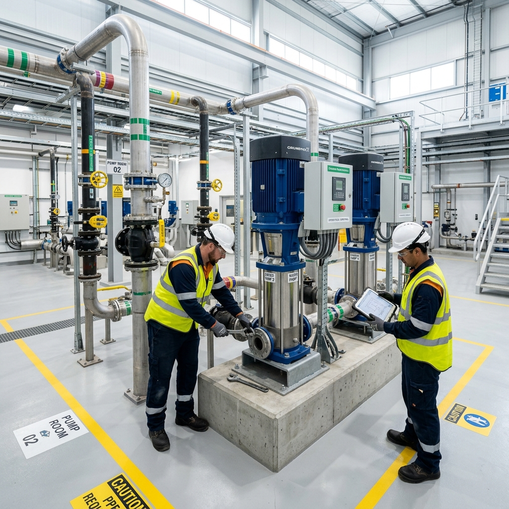
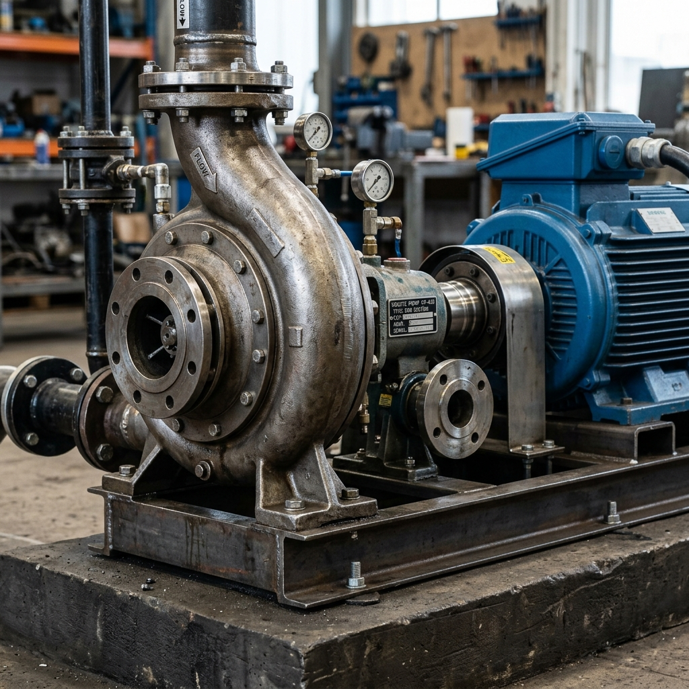
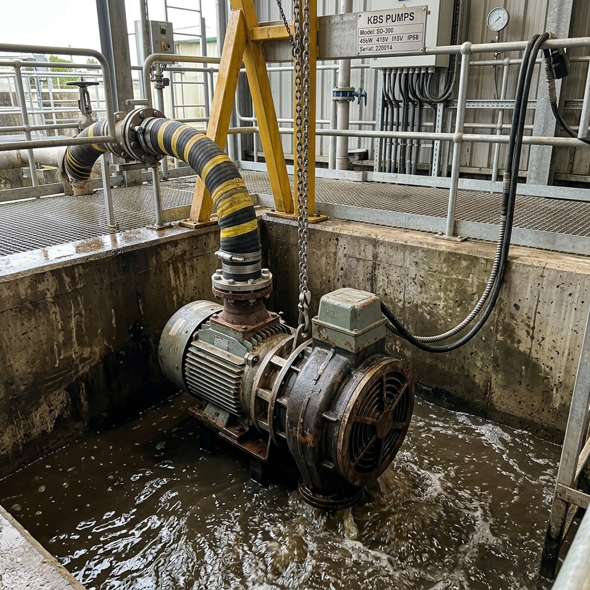

지자체와 공공기관이 품질을 신뢰하고 선택한 비에이텍의 주요 시공 실적입니다.
강원특별자치도 춘천시, 홍천군, 원주시 등 주요 지자체 및 수자원공사와의 상수도 정수 시설, 하수/폐수처리장, 가압 펌프장 납품을 연도별 및 지역별로 투명하게 공개합니다.
비에이텍은 철저한 공정 관리와 무결점 완벽 시공으로 공공 조달 경쟁력을 항시 최상위로 입증합니다.
| 납품 연도 | 발주처 (지자체/공공기관) | 프로젝트명 (사업명) | 설치 장비 유형 | 시공 현장 위치 |
|---|---|---|---|---|
| 2024년 | 춘천시 상하수도사업본부 | 소양정수장 송수 펌프 교체 및 배관 설치 공사 | 대용량 양흡입 벌류트 펌프 | 강원 춘천시 소양강로 |
| 2024년 | 홍천군 상하수도사업소 | 갈마곡 가압장 노후 펌프 개보수 사업 | 다단 고압 벌류트 펌프 | 강원 홍천군 홍천읍 |
| 2023년 | 원주시청 환경과 | 원주 공공하수처리장 슬러지 회수 펌프 공급 | 원심형 논클로그 오수 펌프 | 강원 원주시 호저면 |
| 2023년 | 춘천 도시공사 | 퇴계공단 공동 가압 펌프장 인버터 부스터 연동 공사 | 부스터 펌프 시스템 (3연동) | 강원 춘천시 퇴계동 |
| 2022년 | 한국수자원공사 (K-water) | 횡성 정수장 활성탄 역세척 펌프 공급 및 시공 | 단단 편흡입 벌류트 펌프 | 강원 횡성군 횡성읍 |
| 2021년 | 홍천군 환경과 | 서석 오배수처리시설 차세대 가압 펌프 증설 | 중대형 수중 펌프 (오수/슬러지) | 강원 홍천군 서석면 |
| 2020년 | 춘천시 상하수도사업본부 | 신북읍 소규모 수도시설 개량 펌프 제작 공급 | 수중 모터 펌프 (심정용) | 강원 춘천시 신북읍 |
※ 위 실적 외에도 다수의 아파트 단지 생활 급수 부스터 가압장, 일반 기업 공장 폐수 펌프 등 다양한 사설 부문 실적을 풍부하게 보유하고 있습니다.
정교한 펌프 설치를 위해 수평 진동 허용 오차를 100분의 1 단위로 정밀 얼라인먼트 조정하여 가동하는 비에이텍의 실제 펌프장 내부 완벽 시공 모습입니다.


